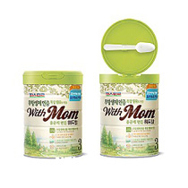

본문콘텐츠영역
식품안전STORY
-
- 연구개발
- 롯데중앙연구소에서는 깐깐한 분석을 수행하여 안전이 입증된 원료만을 선정합니다.
-
- 품질안전
- 식품의 안전성 확보를 위하여 식품의 원료를 꼼꼼하게 위해 요소 중점 관리를 실시하고 있습니다.
-
- 유통안전
- My site 제도로 소비자가 안심하고 선택할 수 있도록 꼼꼼하게 유통매장 관리를 하고 있습니다.
-
- 식품안전
- 국가의 식품안전 법규와 글로벌 규격 이상의 깐깐함으로 무장한 LOTTE Standard Check list
제품소개
-

- 드림카카오 녹차
- 드림카카오는 카카오의 진한 맛과 향이 살아있는 하...
-

- 유산균 쇼콜라
- 국내 최초, 살아있는 유산균이 들어있는 초콜릿이다.
-
- 요구르트 젤리
- 요구르트 젤리는 롯데제과(주)와 세븐일레븐이 협...
-
- 빼빼로 바닐라 블랙
- 빼빼로는 1983년 초코빼빼로 이후로 아몬드, 누드등...
-
- 팜온더로드 통넛츠바
- 믿을수 있는 좋은 농장에서 자란 자연의 원물을 독창...
-

- 프로바이오틱 요구르트
- 오직 단 하나의 재료, 우유만을 발효해서 만든 자연...
-
- 델몬트 파머스 주스바
- 농축환원 주스와 차별화한 프리미엄 주스로 무균충...
-

- 엄마의 마음 위드맘
- 아기를 생각하는 엄마의 마음을 대신하여 제품에 첨...
-

- 초가을 우엉차
- 경상남도 진주에서 재배한 100% 국산 우엉을 겉껍...
-
- 목장우유
- 친환경 무항생제 인증 목장 원유 100%
-

- 라퀴진 함박스테이크
- 두툼하게 다져낸 돼지고기를 정성껏 빚어 부드러운...
-

- AZ버거 오리지널
- 호주청정우로 만들어진 육즙 가득한 빅 사이즈 순...
-

- 간장불고기 도시락
- 선호도 높은 반찬(불고기, 돈까스, 소시지볶음, 볼...
-
- 의성마늘 베이컨
- 의성마늘과 천일염으로 베이컨 특유의 고소함과 건...
-
- 모짜렐라 인 더 버거
- 자연산 모짜렐라 치즈에 고소한 해쉬브라운, 두툼...
-
- 처음처럼 유자
- '순하리 처음처럼 유자'는 천연유자농축액과 유자...
-

- 훈와리 경월
- 훈와리 경월(ふんわり 鏡月)은 일본의 독특한 음...
-
- 클라우드
- 클라우드는 한국을 대표하는 맥주를 선보이고자 한...
-

- 처음처럼
- 처음처럼은 술을 마신 다음날에도 몸 상태가 원래...
-
- 설중매
- 설중매는 매실의 명산지인 광양, 순천지역에서 직접...